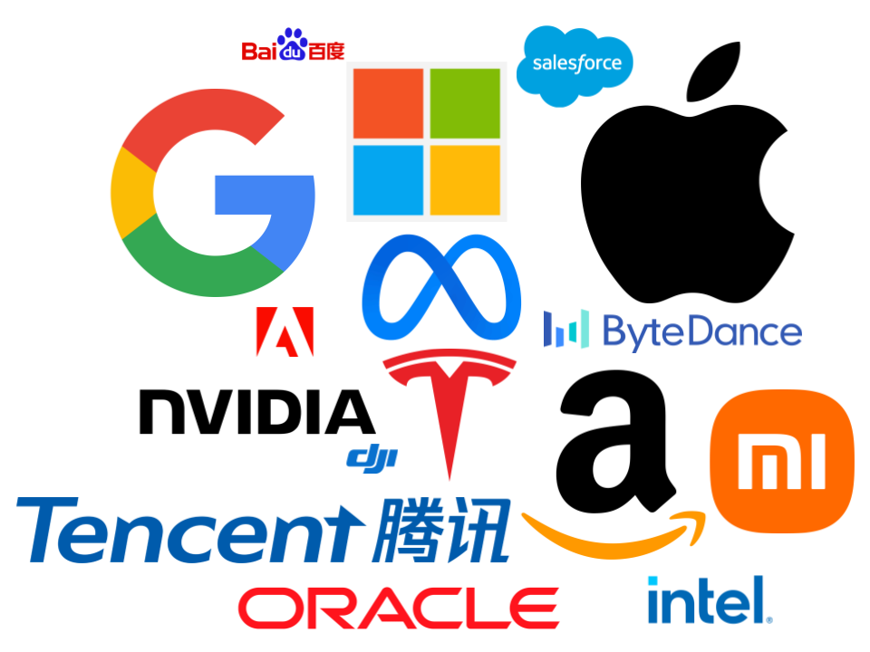

Welcome to Techno club, your destination for cutting-edge technological news, thought-provoking research and deep exploration of the digital world. Our tech blog is dedicated to unlocking the secrets of the ever-evolving tech landscape, giving you a front-row seat to the latest trends, innovations and breakthroughs.
tech companys
Technology corporations are dynamic entities at the forefront of innovation, continuously pushing the bounds of what is possible inside the virtual age. They are characterised via their dedication to advancing and applying technology to clear up complex issues, streamline techniques, and decorate ordinary efficiency. Tech companies operate in numerous sectors, along with software program development, hardware production, telecommunications, artificial intelligence, cloud computing, and more.

In summary, technology companies are dynamic, forward-thinking organizations that contribute significantly to the ever-changing technological landscape. Their influence extends across sectors, driving growth and shaping the way individuals and businesses interact with the digital world.
tech updates
Welcome to the Tech Updates section, your go-to source for the latest and most exciting developments in the tech world. In this fast-paced digital age, staying informed is paramount, and our curated updates bring you the newest insights into the ever-evolving tech landscape.
Whether you're a seasoned technologist, a hobbyist, or just someone interested in exploring the possibilities of the digital world, our Tech Updates section is designed for you Join us on this journey as we unlock emerging technologies, decode the importance of industry change , and the transformative power of innovation Let's demonstrate.
Stay connected, stay informed, and let the world of technology unfold before your eyes. The future is here now, and we’re here to guide you every step of the way.
tech news
Welcome to our Tech News Hub, your go-to source for the latest news and insights about the ever-evolving world of technology. Our dedicated team of tech enthusiasts bring you breaking news, in-depth analysis and a selection of exciting developments in the tech industry.
In a fast-paced technological environment, it’s important to stay informed. Our Tech News Hub is designed to cater to tech enthusiasts and casual readers, offering a reliable and accessible resource for anyone interested in the world of technology.
Join us on this exciting journey as we explore the latest innovations, decode complex technical jargon and provide critical information. Register today and empower yourself with knowledge to succeed in the digital age!
Aboutus
Welcome to techno club!
At techno club, we love to explore the ever-evolving world of technology. Our team of technology enthusiasts is dedicated to bringing you insightful and exciting comprehensive coverage of the latest trends, innovations and advancements in technology.
Driven by our passion for innovation and creativity, we're constantly pushing the boundaries of what a techno club can be. From groundbreaking multimedia installations to experimental soundscapes, we strive to create immersive experiences that stimulate the senses and inspire the soul.
Join us at techno club and become part of a movement that's redefining the future of techno culture. Whether you're seeking to lose yourself in the music, connect with fellow enthusiasts, or simply experience the thrill of the dance floor, you'll find your home at techno club.
Experience the pulse of the underground. Experience techno club.